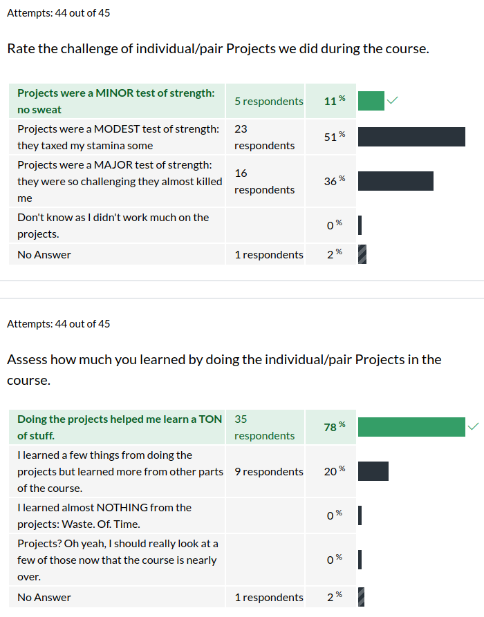
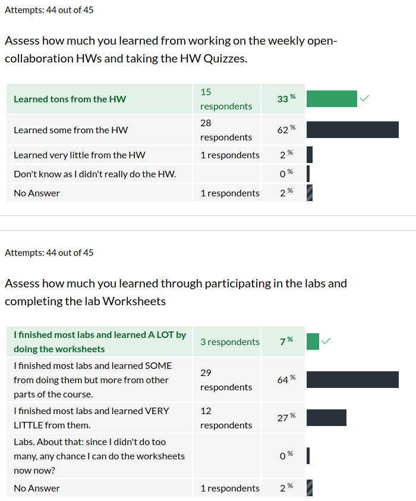
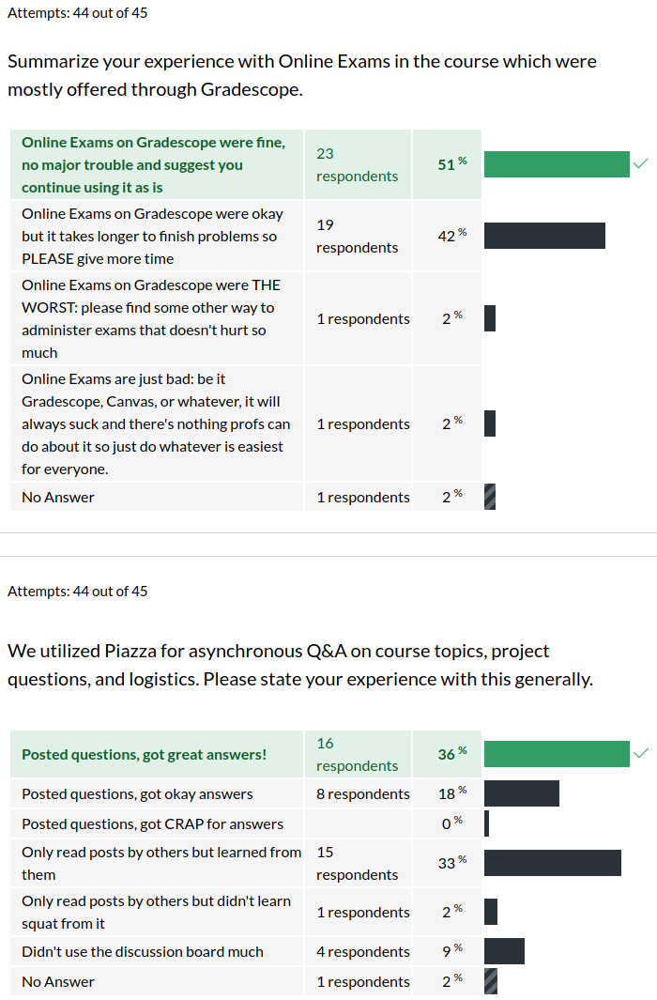
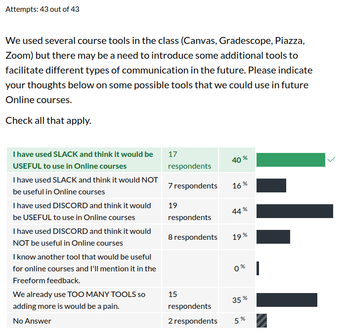

CSCI 4061 Exit Survey Results
Table of Contents
Summary Statistics for Multiple Choice Questions







Freeform Feedback
- One thing I've seen from other instructors is requiring cameras on. That might be an accessibility issue for some, but it really helps virtual meetings.
- My work has a cameraon policy that does wonders as far helping to replace some of that missed sense of community that comes from distance communication.
This is an interesting suggestion that I may try in the fall. I've seen reports and personally experienced that Zoom can grind to a halt if lots of folks have video enabled and bandwidth is limited. However, having a policy to enable video when in breakout rooms or asking questions as students are able may help somewhat in meeting others and remembering who's who. Right now I could identify about half the folks in the class by voice but if I saw them in the street, I wouldn't recognize them. Modern living leads to such strange circumstances.
- I like the idea of discord a little better than Zoom/Piazza.
- I would not add another means of communication as it would complicate more things in my opinion. I think you have a good mix of methods that you are currently using.
From the summary results above, approximately the same number of students indicated that Slack/Discord might be useful but about the same number said more tools would be a pain. Tools like Slack/Discord could be targeted at office hours or lab meetings but induce yet more technical know-how that everyone has to master just to do business in the course. Based on this, I'll likely try structure the course to avoid the need for such additional tools unless other compelling reasons arise to try them.
- The breakout rooms were the most effective part of lecture because it forced people to work on the exercise together.
- One thing I guess was how lecture exercises could feel awkward sometimes when only 1-2 people talk in a group, but I am not sure what would be a good solution. The exercises are a good form of engagement to parallel in-person lectures, but also people cannot be forced to participate.
- The format of live lectures with breakout rooms is a good solution. The largest falling out I saw with the breakout rooms is that students are not ready for lecture with the code pack downloaded and a unix environment set up.
I'm glad to hear that the breakout rooms approach was reasonably well-received. I agree with the observation that some folks may not have participated as vigorously as they might have done so in person, but then in-person exercises have plenty of folks who sit and think silently as well. I found partway through the semester that if I "do the rounds" and drop in on breakout rooms, it motivates folk a little more as they can resolve hindering questions. I'll try to recruit some TAs to help with this for the larger classes this fall. As for preparation for class, that's something I've never figured out how to get students to do and frankly was guilty of when I was a student as well. Likely it's a lost cause: some folks read/practice before class, some after class, and some never at all.
- There just is not enough TA help/professor help when it is needed.
- More course TAs
- Difficulty of getting one on one help. To be fair, I haven't actually tried to go to office hours for this class, but typically they're pretty full and it's just annoying to do it online.
The TAs reported that their office hours were generally lightly attended except as projects came due and then office hours were extremely crowded. This was also my experience. Mostly we helped folks that came in make forward progress and stayed after if we didn't get to visit with folks at least once during the regular time. I do not see a larger than usual outcry on lack of help which, while a little dissatisfying for students, at least assures me that the staff didn't do worse than normal.
- I felt like there wasn't enough material on the lab quizzes to justify the 2 hour lab period, I finished most of them in 15 minutes.
- Labs did not feel very structured, although Minjun does seem to be very knowledgeable and helpful when answering questions.
- Also the new format for the labs is… politely unusable.
- I really liked that you guys recorded lectures and labs for people to watch later.
Labs are a tough nut to crack. On the one hand, I hesitate to make them required for synchronous participation as conflicts inevitably arise. That means we'll do some sort of async-deliverable like a quiz. I also do not want to thrust the work of presenting tons of content on TAs: they are already overworked, underpaid, and don't have the same level of training that professors (ostensibly) have at delivering information. That limits us somewhat on how we can structure async, remote labs that are meaningful. If anyone has concrete suggestions on what TO do rather than what doesn't work, send me email.
- The number one frustrating online course policy for me is the "synchronous/asynchronous" model that serves as a way for professors to essentially double their course time… class is still held at the regular time, but students have other lecture content posted asynchronously… For me, the format of this class worked much better, and felt much more like an in-person class.
As the writer observed in their full note, I have used the sync/async approach in the past and even suggested it as a viable alternative for some professors. While the approach we took in 4061 is still sync/async, it does not double the necessary commitment for students or staff: you either come to lecture and participate or watch it later. I much prefer this method and will use it in the future as well as recommending it to others.
- The major issue that I had with this class and i thing some CompE major would also have is, the prerequisite for CompE students, (EE2361) did not really prepare me for this class as it does not teach much on C and its function calls.
This is an issue that has been raised previously and needs to be addressed by the faculty. Part of the issue is that, for the last 2 years, the CS department has refocused CSCI 2021 from its historical focus mostly on hardware/assembly language with a little bit of C programming to focus more on practical C programming a how hardware affects it with a lesser focus on assembly language. This puts CSCI majors in a good position to interact with the OS using C out of the gate but definitely puts folks with a different prerequisite at a disadvantage. I will reach out to the folks in the ECE department to discuss what course of action we can take to try to improve things. Thanks for mentioning this.
- It seems like people forgot how to compile code during this course because many people are having trouble with makefiles and linking their project. Perhaps an auto-graded gradescope quiz earlier in the course on makefiles and setting up gcc would be a good refresher.
This is probably a good idea and could be done as a small project or HW to make sure folks understand the basics of Makefiles earlier. They are extremely useful and just about everything I publish/produce for the course, including this survey, involves a Makefile in some way.
- I think taking online course is good, cause the winter is so cold, I can stay in my home to take class. :)
I'm glad there a few folks who are seeing silver linings in all of this. There's a parable on cause and effect that I try to keep in mind these days which may be worth your time to internalize.
There is a Taoist story of an old farmer who had worked his crops for many years. One day his horse ran away. Upon hearing the news, his neighbors came to visit.
"Such bad luck," they said sympathetically.
"We'll see," the farmer replied.
The next morning the horse returned, bringing with it three other wild horses.
"How wonderful," the neighbors exclaimed.
"We'll see," replied the old man.
The following day, his son tried to ride one of the untamed horses, was thrown, and broke his leg. The neighbors again came to offer their sympathy on his misfortune.
"We'll see," answered the farmer.
The day after, military officials came to the village to draft young men into the army. Seeing that the son's leg was broken, they passed him by. The neighbors congratulated the farmer on how well things had turned out.
"We'll see" said the farmer.
You'd be hard-pressed to find someone who would describe these as "positive" times, but many tragedies have motivated the generations who bore pain to affect positive change. My great hope is that all of you who are living through a plague, witnessing widespread injustice, and experiencing hardship will use your skills and passion to correct those problems.
Thanks all for your feedback, hard work, and patience. Stay safe until we meet. Happy hacking.